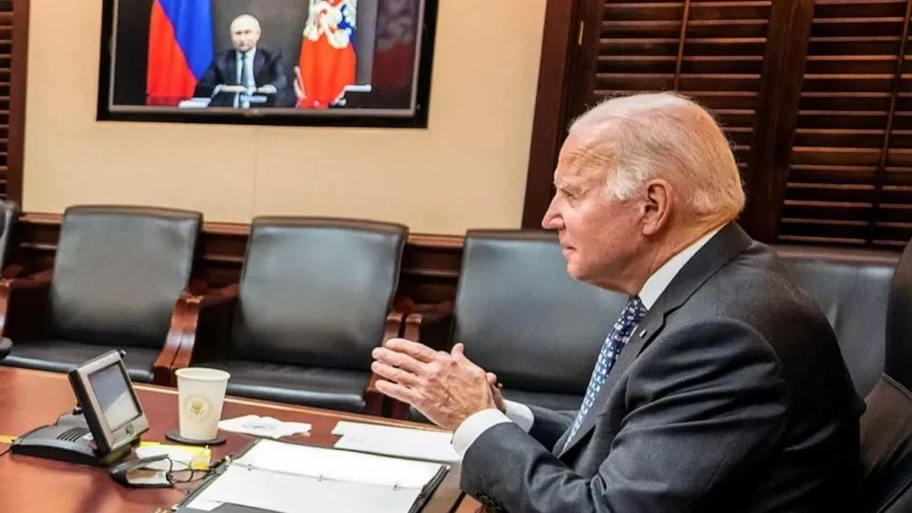
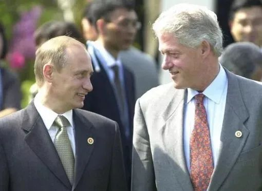
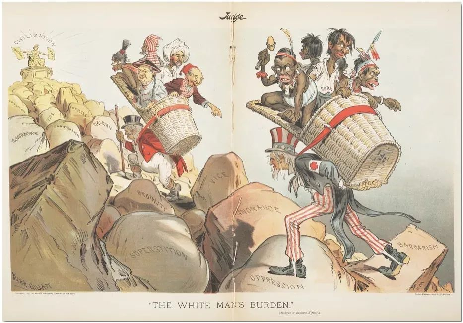
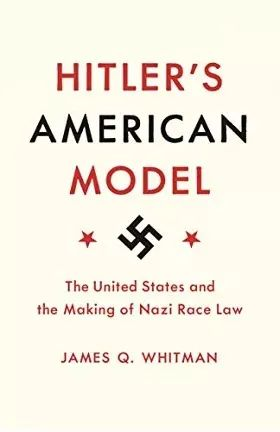

收录于合集
导读： 近年来，美国频频将中俄共同锚定为战略竞争对手，拜登更是以应对来自中俄的挑战来为美军撤军阿富汗辩护：“因为中国和俄罗斯巴不得让美国在阿富汗的泥潭里再陷上十年。” 然而，美国真有可能与两个欧亚大国同时为敌、展开无差别的竞争？
美国文博大学于滨教授指出，虽然战略上中俄都是美国的竞争对手， 但美国外交政策有明显的中俄“温差”：美国建制派尤其是现实主义者从未放弃争取俄罗斯重回西方的努力。 苏联解体以来，几乎每一届美国总统在上任之初都会“重启”对俄关系；而美国总统的每次换届几乎都要伴随中美关系的停滞、倒退、反转以致恶化。美国对华、对俄政策中的这种“不对称性”无法仅仅通过实力、地缘等结构性因素得到解释， 美国社会在认知、文化、甚至文明/种族层面的集体意识，是从主要决策者到普通民众中普遍存在“重俄轻中”情节的深层缘由。
**
**
当前乌克兰危机愈演愈烈，美俄缓和的节奏被打断，美国在中美俄的三角大博弈中或再度处于“两线作战”的劣势局面。然而， 在短期冲突之外更应看到，在美国高度意识形态化和日益种族化的决策环境中，中美关系改善的难度要远大于俄美关系。 对此，中方应未雨绸缪，这不仅有助于应对已经开始的中美关系的长期震荡和持续恶化，也便于把握中美俄三边互动关系的方向和力度。在文明层面，不仅要避免陷入西方的“文明陷阱”，更须与俄罗斯联手建构和维护文明共存共荣的战略选择。欧亚系统科学研究会特推送此文，供读者思考。文章原刊于《俄罗斯研究》2020年第5期，仅代表个人观点，感谢于滨老师赐稿和修订。

▲ 上月，拜登与普京两度通话商讨乌克兰局势，双方均表现出冷静与克制。图源：BBC
美国2017年底发布的《国家安全战略》（US National Security Strategy，NSS），首次以官方文件的形式，将中国和俄罗斯定位成挑战美国主导的国际秩序的“修正主义大国”和美国的战略竞争对手（strategic competitors）。此后陆续发布的《2018年美国国家防务战略》（National Defense Strategy，NDS） 和《2018年核态势评估》（Nuclear Posture Review，NPR） 也如法炮制，视中俄为美国国家利益的最大威胁，其程度甚至排在所谓“混蛋国家”（rogue states）和“伊斯兰国”这类恐怖组织之前。粗略统计，美国这三份战略文件将中俄“绑定”达30次之多。这是自20世纪70年代初中美关系实现正常化以来， 在美国的外交和军事战略中，首次把中俄两个欧亚大陆最大的国家同时定义为美国的战略竞争对手。
虽然中俄两国在美国的政策宣示中都被定性为美国的战略竞争对手，但在政策层面，特朗普政府明显地亲俄反.华：对前者频频示好，与后者全面对抗。 美国外交政策中的这种“中俄温差”现象并非特朗普政府的“专利”，冷战以后美国历任政府都以“重启”美俄关系为己任，同时吊打中美关系。 这种不对称的对俄对华政策的背后不仅仅是基于实力的考量，在美国高度政治化和意识形态化的政治生态中，还有挥之不去的种族因素，其历史惯性使“中国威胁论”在美持久不衰，无论中国强大还是贫弱，都被视为对美国的威胁。
在特朗普时代，中美与美俄关系的最大不同是前者日益向全面对峙发展，它不仅涵盖经济、军事、政治、外交等领域，而且已上升到文明冲突的高度。中国作为美国的非西方的战略对手，在美国的集体意识中被有意无意地曲解、排斥、边缘化和妖魔化，其程度远超美国的另一个战略竞争对手俄罗斯。 在这个意义上，对华强硬可能不仅仅是出于所谓“两党共识”，也源于相当固化的、具有种族色彩的社会潜意识 ，其表现方式可能不甚直白，甚至完全无意识，但无视其存在是至少是不现实的。
1
美国外交战略中的中俄温差
（一） 特朗普：“中国第一、俄国第二”
如果说特朗普的竞选战略和执政理念是“美国第一”的话，其对外政策则是“中国第一”。这一政策最为直白地表露在其国防战略之中。2019年1月1日，代理防长帕特里克·沙纳罕（Patrick Shanahan）在对下属的首次闭门会议上开宗明义，连续三次提及中国。其继任者马克·埃斯珀（Mark Esper）在2019年底刚刚走马上任，就在一次公开演讲中称，美国国防部的“重中之重”（top priorities），“第一是中国，第二是俄罗斯”。2020年5月29日，每天发推数百条的特朗普创纪录地发出了只有一个英文字的推文：中国 （CHINA!），且全部大写加感叹号。此刻，对华贸易战已两年有余，美国的新冠死亡刚刚（5月28日）突破10万，种族暴乱亦愈演愈烈 ，但特朗普挥之不去的心病却是中国。
特朗普虽然个性张扬、善变，但对华观念却十分执着。在2016年的选战中，特朗普多次用苛刻、极端甚至煽动性的语言，谴责中方的对美经济政策，信誓旦旦要改弦更张。 据不完全统计，特朗普在2016年竞选期间攻击中国达数百次之多。 按照斯蒂芬·班农（Steve Bannon）的说法，“特朗普一辈子中，在对华贸易的立场上是最为始终如一的。”
特朗普执着反.华言行的另一面是不加掩饰地亲俄。2016年选战中，他对民主党的反俄言论嬉笑怒骂，百般调侃 ，在一片反俄喧嚣中公开“袒护”普京，甚至不惜得罪共和党主流派。2016年胜选后，特朗普拉俄拒华的行为可以用两个“迫不及待”来概括。一方面，他的候任国家安全委员会顾问迈克尔·弗林（Michael Flynn）和女婿贾里德·库什纳（后被任命为白宫特别助理）迫不及待地于2016年12月初与俄罗斯驻美大使谢尔盖·基斯利亚克会面。另一方面，特朗普本人紧接着与中国台.湾地区领导人通电话，引起中方震怒。一前一后，特朗普对俄中两个大国的亲疏、好恶截然不同。
美国对华对俄政策最显著的不对称性，是在战略层面加速美国的“脱欧入亚”。 尽管这一政策取向在小布什尤其是奥巴马执政期间就开始启动，如再平衡（rebalancing）、向亚太倾斜（pivot to Asia- Pacific）等。特朗普时期，美国军事部署在形式和内容方面都在加速实施所谓的“印太战略”。美国的“印太战略”可以说是特朗普政府对外政策中唯一具有战略性的举措，目的是为了防范、对冲以致遏制崛起的中国在欧亚大陆与日俱增的影响力。相比之下，特朗普政府在欧洲非但没有类似的战略，而且还在经济和安全领域与欧洲盟国斤斤计较，争长论短，至少在心理上削弱了美国的信用和北约的内聚力，客观上缓解了俄罗斯的外部压力。
2020年新冠疫情肆虐，中美关系也地动山摇。在中国疫情最为艰难的1-2月间，特朗普多次公开赞扬中国的防疫措施。3-4月间美国疫情开始恶化，特朗普政府与外交、国防部门高度默契配合，借助国会和媒体的极端保守势力，推出一轮污名化中国的系列组合拳。
相较于伤痕累累的美中关系，美俄关系在疫情期间尚属“正常”。尽管美俄之间存在着种种结构性矛盾，美国外交领域的建制派/民主党一直对特朗普的亲俄政策加以制衡，但两国首脑交流正常，双方互送防疫物资。特朗普也不放过任何机会改善美俄关系，甚至不顾盟国反对，邀请普京参加拟议中的2020年9月在戴维营举行的G7峰会。2020年是二战结束75周年，特朗普在2019年底就表示有意赴俄观摩二战胜利75周年的阅兵式。白宫的这一表示有多少诚意，各方见仁见智 ，但是与近年来西方篡改二战史的潮流还是迥然不同。6月18日，普京在美国《国家利益》杂志发表9000字署名长文“第二次世界大战75周年的实际教训”，全面评价二战历史，强调苏联红军在二战中的重要作用，反击西方修正派行为。美国建制派的重要外交政策平台对普京的俄罗斯，至少还存有敬畏之心。
（二）美国建制派的算盘
特朗普政府对华对俄政策中的种种“不对称性”，有意无意地迎合了建制派的政策考量，即， 尽可能地弱化和分化中俄关系，进而在中美俄三边博弈中重回支配地位。
2014年乌克兰危机前后，中俄两国战略协调与合作的广度和深度都在逐步拓展，美国在大三角中的地位相对不利。 在美国现实派以及相当多数的特朗普国安团队人士看来， 美国的长远战略应寻求在大三角中避免与中俄同时对抗。 基辛格认为，尽管俄罗斯在乌克兰/克里米亚问题上“犯规”，还是应该被看作世界均势中的一个关键组成部分 ，以防止中俄进一步接近。已故的兹比格纽·布热津斯基以对俄强硬著称，即便如此，布氏在乌克兰危机期间居然提出乌克兰“芬兰化”的选项 ，以避免刺激俄罗斯。约翰·米尔斯海默（John Mearsheimer）的说法则更为直白，他认为，“导致乌克兰危机的原因，是北约和欧盟不间断地东扩，以及2004年启动的‘橙色革命’等一系列民主运动。对普京来说，乌克兰民选的亲俄总统被以‘政变’的方式‘非法’推翻，是压垮俄美关系的最后一棵稻草。西方应从长计议，停止‘西化’（westernize）乌克兰，公开表示格鲁吉亚和乌克兰不加入北约。有朝一日，美国还要指望和俄罗斯共同应对日益崛起的中国。
在政策层面，约翰·米尔斯海默的现实主义在自由干涉主义（liberal interventionism）盛行的时代属于绝对少数。但中俄不断深化的战略伙伴关系却日益成为美国建制派的一块心病。为此，美国亚洲研究局在2016年大选前发起了一个有数十名专家参与的研究项目，目的是要找出中俄关系的契合点与潜在的分离器，中俄在哪些问题上可以志同道合，又有哪些现实和潜在的因素会使中俄反目成仇，从而为美国的“联俄制华”战略提供必要和可行的选项。据笔者观察， 参加这一项目的美国学者几乎都属建制派，在政见方面与特朗普大相径庭，更难以接受特朗普对俄罗斯的一片痴情，但在联俄制华问题上，却与特朗普息息相通。
建制派的努力在2018年10月终于上升到政策层面。美国国家安全顾问约翰·博尔顿在访问俄罗斯期间，就美国退出《中导条约》问题与俄方商谈。表面上是与俄国过招，真实目标是限制中国中程核打击力量的发展，保持美国在中国周边和印太地区的军事优势。除此之外，博尔顿还不断向俄方抱怨对中国的不满，这一举动让俄方颇为意外。
美国区别对待中俄两个“战略竞争对手”的根本原因之一，是 基于美国对中俄两国对美“威胁”程度的认知，即， 稳步崛起的中国对美国是长远的、战略上和综合性的挑战，而俄罗斯充其量是短期的、区域性的和仅仅在安全方面的“麻烦”而已； 尽管俄罗斯仍然保有强大的核武库，但其经济结构、效益和规模完全无法支撑地缘政治和帝国野心，无力与西方持久对抗。相当部分的美国建制派代表，包括外交、军方和情治界人士都认为，俄国最终会意识到中国是其在地缘政治层面最大的威胁，从而投向西方怀抱。
（三）美俄之间：永恒的“重启”？
可以说， 美国建制派尤其是现实主义者（如米尔斯海默等人）从未放弃争取俄罗斯重回西方的努力。苏联解体以来，几乎每一届美国总统在上任之初都会“重启”（即缓和）对俄关系。 老布什政府跨越了戈尔巴乔夫和叶利钦时代，对苏联的解体其实非常震惊甚至不知所措，竭力稳定双边关系。据布什的国家安全顾问斯考罗夫斯特回忆，布什不打算与俄国人对抗，“他（布什）强调说，冷战无输家，每一方都是赢家”。即便是在苏联解体前夕，布什总统和他的国务卿贝克仍然希望戈尔巴乔夫能够度过危机，稳定政局，而对其挑战者叶利钦却感到难以把握。
布什继任者克林顿的对俄政策也是在充满憧憬中启动的。在克林顿看来，俄罗斯痛苦和不确定的转型阶段是一个全新课题，而协助俄罗斯新政府成功转型一直是克林顿关切的问题。为此，克林顿在1993年10月叶利钦与议会反对派的争斗中明确支持前者，在1996年俄总统大选期间通过国际货币基金组织向俄罗斯提供102亿美元贷款，支持俄于1997年加入G7。尽管叶利钦在科索沃问题上与克林顿政府反目，但美方对叶利钦的接班人普京仍寄予厚望。普京上任伊始，美国国务卿奥尔布赖特就于2000年5月初访俄，3小时会谈后对普京评价极高。普京对来访的美国国务卿也推心置腹，表示他虽热爱柔道、喜好中餐，但却是地道的欧洲人（European substance）。5月普京就任总统，6月克林顿访俄， 期间普京甚至向克林顿提出俄罗斯加入北约的问题，克林顿对此“不持异议”。

▲ 普京与克林顿。图源：作者提供
2001年小布什入主白宫，立刻驱逐53名俄国外交官，以此惩罚俄在美国的谍报活动，这是继里根总统1986年驱逐80名苏联外交官以后最大的一次驱逐行动。然而数月之后，布什与普京在斯洛文尼亚会面，会后布什表示，他从普京的眼神中看到了他的灵魂，认为普京是西方可以信赖和打交道的俄国领袖。
此后一年，美俄关系急速升温，“9·11”事件前两天，普京甚至电话通告布什，根据俄情治部门的判断，近期可能会有重大事件发生。而在斯洛文尼亚的高峰会上，普京就提醒布什，俄罗斯南面的“弧形不稳定地段”（arc of instability）非常危险。“9·11”事件当天，普京又是第一位给布什打电话表示慰问的外国领导人。据布什的国家安全助理赖斯回忆，在那一刻，她的直觉是冷战真的结束了。2001年11月普京首次访美，布什在德克萨斯州克拉夫特庄园款待普京一行，美俄关系似渐入佳境。
奥巴马任期内，由于美国公开、大规模地干涉俄2012年大选 、利比亚和叙利亚内战、斯诺登事件（2013年）、乌克兰/克里米亚危机、俄罗斯“插手”美国2016年大选，俄罗斯退出G8（2017年1月）等问题，美俄关系持续恶化。 但两国的顶级外交人士却保持了异常良好的工作和个人关系 ，每次晤面都气氛融洽，相处无间；寒暄客套、互送礼品之后，就是长时间的密谈，以致有媒体对两人的“亲密无间”用“生死之恋”（fatal attraction）加以调侃。克里与拉夫罗夫“难舍难分”的背后，应该是美俄高层近乎无障碍的（seamless）交流、试探、协调和利益交换的各种渠道，加之双方的不懈努力。这样的亲密关系不是任何美俄高层人士可以做到的，但两位外长在美俄关系跌入谷底时仍然能够相敬如宾，甚至心有灵犀，实属罕见。尽管美俄关系受制于多种结构性矛盾而步履艰辛，但很难设想，如果两位外长私交不好的话，美俄关系会跌落到何种地步。一个重要的事实是，冷战结束后几乎历届美国政府上任，都要“重启”对俄关系，虽然后来都不了了之，但继任者总是乐此不疲，这几乎成了一项铁律。
在这个意义上，特朗普当选前后的“亲俄”取向，应该是符合美国对俄政策的一般形态和方式。 而特朗普最大的问题是口无遮拦、过度调侃，急于求成，被政治对手抓住把柄而陷入被动。这也可以解释为何美国的建制派尽管与特朗普的执政理念格格不入，对特朗普的个性嗤之以鼻，但在联俄抗华问题上却高度一致。
2020大选之年，建制派再次为“重启”美俄关系造势。8月5日，百余名美国外交、安全和国会前高官、智库和学界精英签署一份公开信，力主下届政府和国会对俄采取更为现实和灵活的政策，以阻止中俄继续联手制美。签名者中不仅有前国务卿舒尔茨（George Shultz）、前防长佩里（William Perry）、前中情局长麦克劳林（John McLaughlin）、两名前参议员（Sam Nunn和Gary Hart），而且还包括几乎所有在世的前驻俄大使，众多国际关系和俄罗斯研究界巨头，如约瑟夫·奈、格雷厄姆·埃利森、米尔斯海默、罗伯特·杰维斯（Robert Jervis）等 ，其规格和阵容远超2019年由美国民间组织发起的百余名学者对华政策公开信。
外交层面如此，美俄在军事层面的交流一直保持并达到相当密切的程度。除了冷战期间的传统和基础之外，“9·11”事件后，美俄在情报方面的交流也可圈可点。即便双方在叙利亚内战中针锋相对，两军的情治部门仍保持联系。（中情局长伯恩斯2021年11月初对莫斯科进行为期两天的工作访问，期间与普京总统通电话——作者加注）
（四）中美之间：先苦后甜？
相较于美俄之间的永恒“重启”，美国总统的每次换届几乎都要伴随中美关系的停滞、倒退、反转以致恶化。 里根在大选中就信誓旦旦要恢复美.台关系，令刚刚建立的中美关系立刻面临危机。在中方眼中，里根的继任者老布什是“老朋友”，中美正式建交前曾任美国驻华“联络处”主任，但布什在1992年争取连任的竞选中，为了自身和党派利益，还是批准了对.台出售150架F16战机，而此种战机在当时刚刚结束的海湾战争中曾大显身手。尽管如此，布什仍然无法挽回选战中的颓势，而他的对手克林顿恰恰也是因为打“中国牌”而胜选，比如大肆攻击布什对中国心慈手软，背叛了美国的价值观。二人之间的恶斗，实际上是在比谁更反.华。2000年小布什竞选时，发誓要把中国这个战略伙伴变成战略竞争对手，2001年的撞机事件，几乎使中美之间的战略对抗突然提前到来，只是随后发生的“9·11”事件，迫使美国转向，以应对防不胜防的国际恐怖主义。
2009年初奥巴马走马上任，美国经济仍未走出2008年金融危机的阴影，国务卿希拉里一时把中美关系形容为“同舟共济”，但数月后便开始在气候/减排、谷歌问题、汇率/贸易等方面不断挑战中国核心利益，使双边关系逐步滑向对抗；同时高调介入中国周边事务，利用南海问题挑拨中国- 东盟关系，挑动印度抗衡中国，以钓鱼岛鼓动日本制华，利用天安舰和延坪岛事件套住韩国，借朝鲜的鲁莽行动将半岛推向战争边缘；最终利用TPP和再平衡战略，在地缘经济和地缘政治层面防范和压缩中国在亚太及周边的空间。中美关系在奥巴马当政期间从未进入过持续的正常状态，这背离了双边关系的一般规律，即每届总统就任前后都要对中国烧几把火，双方一般都会在美国总统执政的中后期进入相对稳定的互动状态。
美国对俄“先软后硬”、对华“先硬后软”的“规律”，其实还是表面现象。在美国的政治生态中，中国似乎永远是一个极为敏感、非常政治化、又充满政治风险的话题 。有志问鼎白宫者欲保持“政治正确”，必须对华强硬。 在2016年大选中，希拉里虽然反俄，但在对华问题上却公开表示“不想让她的孙辈们生活在一个由中国人主导的世界”。奥巴马则警告美中即将到来的“冲突”（conflict）。而为希拉里助选的前国务卿奥尔布赖特则对特朗普政府将中俄“捆绑”、同时作为美国的战略竞争者非常不满，认为中国对美国的威胁远远大于俄国，把中俄相提并论是“过分抬举普京”。其中对华最为仇视的莫过于白宫国家贸易委员会主任彼得·纳瓦罗（Peter Navarro），他不仅将中美贸易关系定格为你死我活的“零和”博弈，还把中国政体妖魔化。纳瓦罗笔下的中国已经是万恶之首，必除之而后快。
特朗普的对华政策走到如此地步，建制派也有不可推卸的责任。所谓美国两党在对华政策上的新共识就是对华强硬，全盘拒绝中国的经济、外交和社会发展模式 ，而这种“共识”恰恰是在奥巴马执政时期“不知不觉地”在美国尤其是华盛顿的政治圈子内成型的。特朗普上台的头三年（至2020年初），尽管所谓“通俄门”是美国政治的“主旋律”，美国建制派的对华战略焦虑还是达到了空前的程度，反.华自然成为美国外交的主线。
拜登任职第一年，美俄、美中关系持续紧张，中俄美三方在台.海和乌克兰问题上的博弈日趋激烈，西方和美国也以此攻击中俄的“修正主义”行为 （如《国会山报》，“Eerie similarities link the Ukraine and Taiwan situations,”2021年12月27日）。 然而两者问题的性质非常不同。 前者是基于三份由两国领导人签署的、有法律约束力的官方文件，后者为美方对戈尔巴乔夫和叶利钦本人的口头表示，即君子协定。在技术层面，美方对中俄“犯规”的性质也有天壤之别：在前者上是明知故犯，单方面修改游戏规则，无意遵循维系台.海和东亚稳定半个世纪之久（1972-2022）的官方文件的文字和精神。在北约东扩问题上，西方早期采取的是战略欺骗行为，如今旨在迫使一个国力不济的俄罗斯接受北约东扩的既成事实。 尽管如此，美国和北约在2022年伊始就与俄方进行了三轮会谈，而美国的主流媒体也不排除在北约东扩问题上做出某种让步的可能 （CNN主播Zakaria 2022年1月16日与普京的发言人佩斯科夫长达20余分钟的对话）。美俄关系任何程度的“软着陆”客观上都会使美国将更多的精力和资源转向中国。
（五）俄中之别：个体与群体
在对俄中两大对手的“区别对待”中，可能最明显的就是“打击面”的差别。无论是在选战中还是执政后，美国主流媒体和建制派对俄罗斯的批评，一般都是因人因事，比如对俄“侵占”克里米亚，“干扰”美国选举；或针对俄罗斯某些领导人，尤其是普京本人及其人格“缺陷”，如克格勃背景、不文明行为（光膀子）、大男子主义、反同性恋等。即便是没完没了的“通俄门”，建制派只是抓住所谓俄罗斯干政的把柄，借此攻击特朗普本人，俄罗斯究竟在2016年美国大选前后做了什么手脚，其实并不重要。
而在对华问题上，美国人想象中作为“敌人”的中国，既是一个整体，也是具体的每一个中国人，而不仅仅是个别精英。 2018年2月13日，联邦调查局局长克里斯托弗·雷在参院情报委员会作证时称，“整个中国社会都是对美国的威胁”。同年7月在科罗拉多州阿斯本安全论坛上，雷又一次直接点出中国对美构成最大威胁。9月12日在接受哥伦比亚广播公司电视采访时雷再次强调，没有任何国家比中国对美国构成的威胁更大，因为没有一个国家比中国对美国的观点、创新、经济安全、甚至对美国人的日常生活，构成更广泛和全面的威胁。尽管雷在访谈中称美国与中国人民没有冲突，但中国人仍是联邦调查局反碟报工作的首要对象。
在指责中国的问题上，不仅特朗普的高官们争先恐后，特朗普本人也亲自出马，甚至常常在完全不相干的场合拿中国说事。在9月26日联大的发言中，特朗普突然指责中国干扰美国中期选举。一周后，副总统彭斯也在一篇“匆忙准备”的演讲中，指责中国干预美国中期选举。 特朗普入主白宫以后笔者曾断言：中美关系好，好不到哪儿去；但坏起来，则是没有底线的。 ****
2
中国“问题”的特殊性：“文明乎”？种族乎？
如此大规模、超强度地密集攻击一个大国，尤其是将14亿中国人统统视为对美国的威胁，在世界外交史上极为罕见。中美之间早已形成了错综复杂、相互依存的互动关系，硬要将这一有相当深度和广度的双边关系在极短的时间内人为地撕裂、打烂，把全体中国人作为敌人，实在需要相当的想象力和决断力。在美国历史上，也只是对日裔美国人采取过类似不加区别的敌视行为，但那也是在日本偷袭珍珠港、美日进入战争状态以后的事。而中国对现存国际秩序的维护力度，远超作为守成大国的美国。2020年3月中国疫情刚刚缓解，就开始向世界提供防疫救助并输出海量的医疗防护器材。不仅如此，中国改革开放以来向世界和美国提供了大量质优价廉的制成品、每年上亿出手阔绰的游客、数以百万计的留学生和大量的专业人员，极大地促进了包括美国在内的世界经济的发展，为何美国仍对中国如此敌视？！
（一）斯金纳的“文明”“快闪”
对于这种几乎举国一致的反.华，新加坡学者马凯硕（Kishore Mahbubani）在2017年初指出：“几乎没有任何美国公众人士会公开地为中国辩护。相反，所有美国政界人士都会竞相贬损中国。” 然而马凯硕仅仅指出了美国政治生态中一个普遍存在的现象，并没有提供任何深度解说。
两年以后，时任美国国务院政策规划办公室主任凯润·斯金纳（Kiron Skinner）不经意地道出原委： 美中之间的竞争是两个文明和两个人种之间的斗争，“这是美国从未经历过的”。为此，她所主持的国务院正在制定一项类似冷战期间由乔治·凯南提出对付苏联的“遏制”战略，以便应对中国这样“一个非高加索人种 （即白种人，笔者注） 的强大竞争对手” 。相比之下，冷战期间与苏联的竞争不过是“西方家族的内部之争”。
一位非裔女性外交高官，从白种人的视角，在文明/种族的层面解读世界两强的关系，不仅在美国外交史上前所未有，在“政治正确”占主导的美国外交圈内，这本身就是一个匪夷所思的现象。对此，美国政治精英的反应相当复杂。一方面，斯金纳的论点得到了一些极右人士的支持，如斯蒂芬·班农等 ，但在华盛顿遭到了几乎一边倒的批评。除了难以认同其露骨的种族主义和蹩脚的历史观以外 ，建制派还担心“文明冲突论”不利于团结非西方盟友共同遏华，也会弱化美国对世界的道义感召力。建制派最为忌讳的是，“文明冲突论”会给人以某种印象，即美国与同为白种人的纳粹的关系远超与中国的关系。斯金纳的“大战略”虽有争议，却很快退出公众视野，支持者和反对者似乎都无心恋战，斯金纳本人2019年8月离职前也从未公开回应众多的质疑和批评。
▲ 美国国务院前政策规划办公室主任凯润·斯金纳。图源：CCTV
在亨廷顿看来，“文明”之争最为持久、最无解，尤其是西方与非西方之争：“国际冲突的根源是文化和文明的冲突……”。“文明冲突论”一文问世四分之一世纪后，亨氏的预言不幸被证实，如今西方对来自非西方国家的难民潮惶惶不安，民粹高涨，反民主、反体制、反移民、反有色人种的右翼势力大行其道，唤醒了西方“文明冲突论”深层的种族意识。西方主导的“自由国际秩序”的“终结”，加快了所谓“文明冲突”向种族冲突的过渡。在此种国际政治生态中，作为非西方、非西式民主制度、非结盟、世俗和拥有独立自主的外交和军事力量、正在稳步崛起的中国，不可能不成为西方和美国臆想中的另类（the Other）。
然而这番“斯金纳快闪”还是揭示了美国外交理念中一些深层问题。 多年来，“种族”在美国外交中都是一个被刻意回避的符号。 亨廷顿1993年发表“文明冲突论”，是基于宗教、文化、历史和语言等因素，未直接涉及种族问题。2001年的“9·11”事件后，“文明冲突论”盛行。即便如此，小布什政府仍然顶住巨大压力，拒绝将整个伊斯兰文明作为西方的敌手。 亨氏文章问世四分之一世纪后，美国外交决策的最高智囊机构在对华政策上居然把“文明”与种族和肤色直接挂钩，也许不仅仅是斯金纳本人的“无知”或心血来潮，而是表露了美国对华政策中一些更为深层的理念，具有更广泛的、超越时空的政治文化基础。
（二）“让华人滚蛋”
美国精英和民众对中国的迷茫、傲慢与偏见，在相当程度上是美国国内深厚、持久的仇华、排华、拒华情结的自然外延。 1882年实施的《排华法案》，是美国历史上唯一针对某一族裔的移民排斥法案，直到1943年二战期间才被废除。 该法案颁布以后，又有一系列歧视性法案相继出笼：禁止华人在美国拥有房产，禁止华人与白人通婚，禁止华人妻子儿女移民美国，禁止华人在政府任职、参加选举，等等。应该指出的是，美国19世纪下半叶的排华浪潮始于底层民众，尤其是在经济不景气时期，如当年的美国劳联主席冈珀斯认为，“美国白种人与亚洲人的种族差异永远不会消除，优等白人必须通过法律排斥低等亚洲人，如属必要，可以诉诸武力”。西奥多·罗斯福在1894年也宣称过，“把华人放进来会毁灭白人”，并与众多的种族主义者一起号召“让华人滚蛋”。
1941年12月日本偷袭珍珠港以后，中美开始商谈订立新约以废除美国在华治外法权及其他特权，中国驻美大使魏道明同时向美国国务卿赫尔提出废除《排华法案》。然而，尽管中美已经成为战时盟国，美方对废约仍不甚积极。一般认为，最终促使废约的是1943年初宋美龄访美，尤其是她1943年2月18日向美国参众两院联席会议发表的演说，成功扭转了美国白人对中国人的态度，为美国废除《排华法案》扫清了障碍。然而，废除《排华法案》的最终动力，却是珍珠港事件后日本成功的战时宣传，即利用《排华法案》离间中国与美国的同盟关系，美国因此日益感受到道义上的压力以及与之相关的利益，最后不得不废除《排华法案》。
2012年6月18日，美国众议院最终以立法的形式，为曾经排斥和歧视华人的做法道歉。然而这一道歉案也明确表示，立法道歉并不会给受到《排华法案》影响的美籍华裔家庭索赔提供依据。根据1988年里根总统签署的法案，就二战期间将日裔美国人投入集中营的做法道歉，并向10万日裔美国人每人赔偿两万美元。而美籍华人所得到的，远逊于作为敌国的日本在美侨民和日裔的最终所得（无论是道义上的还是经济上的），华裔和中国在美国集体意识中的地位，仍有巨大的调整空间。
不仅如此，华裔在美国的政治地位和影响力，更不如非裔、拉丁裔，甚至不及穆斯林和非法移民。 2018年以来包括特朗普在内的美国高官多次公开宣称，所有的中国人都是间谍，对美国都是威胁，华裔在美国官方眼中，几乎已经成了“敌侨”的代名词。不仅特朗普政府如此，美国媒体和智库人士2017年就开始讨论一旦中美开战，如何处置几十万甚至上百万在美国工作和留学的中国公民，外加几百万美籍华人，因为他们都会成为美国的敌人。 《华尔街日报》和《华盛顿邮报》前记者托马斯·里克斯 （Thomas E. Ricks） 为此绘制了一幅当年关押日裔美国人集中营的地图，刊登在美国著名的《外交政策》 （Foreign Policy） 刊物上（见下图），悲观地指出中美一旦开战，几十万在美中国公民和数百万华裔将不可避免地步日裔美国人后尘，成为大规模种族迫害的牺牲品。

▲ 图源：FOREIGN POLICY
如此公开讨论如何“处置”数百万华裔和中国在美侨民，在美国主流社会、媒体和极度自由化/反特朗普的大学校园里，居然没有什么人和团体感到这是一个问题。 而同样的主流社会、媒体和大学校园却一直以各种方式在替难民、穆斯林和非法移民打抱不平。当年美国民权运动领袖马丁·路德·金所说的对美国种族隔离政策视而不见的“沉默的大多数”，如今在华裔问题上再度显现。
在百年前西方的集体意识中，中华文明、中国和华人不仅是非文明的、劣等的、肮脏的另类，也是难以调教、穷凶极恶的怪物和巨兽。百年之后，西方学界再次回归“文明冲突”问题，美国政治学泰斗亨廷顿甚至莫名其妙地断言伊斯兰和孔教将联手对抗西方。然而，与亨廷顿的预言相反，如今伊斯兰世界四分五裂、水深火热、暴力丛生的根源，恰恰是西方无限度干涉的结果；而最终却祸害自己，导致西方民粹浪潮和极右势力的爆发。
（三）“宁做俄罗斯鬼，不做民主党人”
特朗普“亲俄”并不等于对俄罗斯全盘接受。 美国传统外交理念中的种族主义，实际上有一个等级制度 （hierarchy） 的“细分法”，它不仅仅是针对非西方的人群和地区，即便是对西方内部各族裔也要分为三六九等。 对主导国际秩序的盎格鲁- 撒克逊人来说，欧洲和亚洲血统各半的斯拉夫人的“种族排名”要在盎格鲁- 撒克逊和日耳曼族之下；斯拉夫人种虽然吃苦耐劳，坚忍不拔，但却属于四肢发达、头脑简单的“农夫型”之列。由于在地理和文化层面的特殊地位，亦东亦西、不东不西之斯拉夫文明的身份认同难以确定，这包括跨文明的欧亚主义（Eurasianism），游离于东西方之间孤独的（одиночество）俄罗斯；亨廷顿甚至将“斯拉夫- 东正教”视为一个置身于西方之外的独立文明体系。
对19世纪末、20世纪初的盎格鲁-撒克逊族群来说，俄罗斯国民性中的唯一强项是持久的、义无反顾的领土扩张 ，在西方殖民扩张史上可圈可点，这其中当然包括沙俄与西方列强联手对中国的侵夺。然而俄罗斯体量巨大，与欧亚大陆众多非西方民族的复杂互动所产生的特殊基因，对追求种族纯洁性的西方来说，还是难以完全认同。无论俄罗斯强大或贫弱，西向还是东进，其复杂的身份认同在西方的潜意识中都是一个“问题”。普京执政初期数次要求加入北约均不被接纳（苏联领导人在斯大林去世之后也曾要求参加北约，都不了了之），西方对俄罗斯的蔑视、排斥和恐惧应该是一个常量。
尽管如此，在美国人看来，俄罗斯在西方体系内部的“文明”程度还是要高于“懒惰”“散漫”的拉丁族（意大利、西班牙和法国）。 亨廷顿虽然将俄罗斯和东正教定性为西方之外的文明体系，但在他描绘的所谓“西方内战” （Western civil war） 最后阶段的20世纪中，俄罗斯都是当之无愧的重要参与者。 在20世纪下半叶的冷战期间，苏联与美国一道，更是两极体制的支柱。相对于战乱不已的20世纪上半叶和无节制的自由干涉主义肆虐的21世纪，实力相对均衡的两极体制更是一个有序的、可控的世界，或“持久和平”的时代。冷战最后几年，美苏领导人之间的关系相当和谐，双方在军控、地区热点（伊拉克）、东欧民主化等方面的协调与合作，使老布什确信“国际新秩序”已经到来 ，以致美国庞大的军工情复合体对苏联即将到来的巨变毫无感觉。
即便是在俄罗斯被美国主流媒体和建制派妖魔化的21世纪，美国社会中公开亲俄也不是匪夷所思的现象。2016年以来，保守的福克斯电视台几乎是日复一日地提醒其观众，中国是美国最大的挑战、最坏的敌人，俄罗斯对美国的伤害和威胁与中国相比微不足道。对特朗普的支持者来说，亲俄甚至比亲民主党更为可取。 2018年中期选举时，特朗普的拥护者甚至“自发性”地打出“做俄罗斯人，好于做民主党人”的口号。 在这个意义上，特朗普和美国建制派在联俄制华的问题上高度一致。

▲ 特朗普支持者身着“做俄罗斯人好于做民主党人”的T恤。图源：作者提供
美国保守派对俄罗斯的偏爱并非一厢情愿。 普京治下的俄罗斯所奉行的“温和的保守主义” (умеренный консерватизм, 见普京2021年10月21日在瓦尔代年会的发言) ，其实与美国和西方的保守理念高度契合。 与此同时，《今日俄罗斯》等俄官方外宣平台在西方有众多“之音”，事实上已深度介入西方内部白左与极右之间高度意识形态化的论争。俄罗斯有主流派学者甚至将提倡多元化、反种族主义、提倡政治- 经济-性别平等的美国的主流自由主义定义为liberal totalitarianism，赢得了美国保守派的欢呼。后苏联时期俄罗斯学界主流派这种“矫枉过正”有其自身逻辑。相比之下，在美国高度意识形态化和泛种族主义的政治环境中，对外政策中的缝中必反与美国社会中根深蒂固的仇恨华裔的情结有密切相关。中俄两个战略伙伴在美国国内的极不对称的处境，可见一斑。
无论如何，苏联解体30年后，即便俄罗斯与西方/美国在地缘政治层面激烈博弈， 一个在 帝国 （苏联） 废墟上浴血重生的俄罗斯，俨然以西方价值观最坚定捍卫者的姿态，在意识形态层面强势“回归”西方，如此创建，是苏 联帝国的创 建者和掘墓人都不曾设想的。 2021年伊始，美国数位高官（国防部长奥斯丁和国务卿布林肯等）断定普京在重建苏联帝国，对此，笔者不敢苟同。18年前普京第一任总统结束之际（2004年），笔者曾半调侃式地首次将这位后苏联振荡期间拨乱反正的前克格勃少校称为“普京大帝”（“Putin the Great,” Harvard International Review, summer 2004）。回头看, 普京对内以东正教保守传统重建俄罗斯的价值观，对西方则以21世纪的 “第三罗马”的姿态高屋建瓴。对于一个赢得了冷战却又迷失自我的西方，这不能不是一个巨大的讽刺和挑战。
3
美国IR理论的种族主义基因
（一） 美国百年：种族的诱惑与尴尬
斯金纳将中美关系置于文明/种族层面探讨之时，正值种族问题在美国国内呈井喷之势，这与百年前的美国何其相似。19世纪末20世纪初，美国完成本土开拓并征服西半球，开始摆脱孤立主义，走向充满诱惑却又难以把控的外部世界。面对强国林立的“老欧洲”和广袤、动荡的非西方世界，刚刚起步的美国国际关系学（IR），却是以“种族”（即白人至上主义和信奉适者生存的社会达尔文主义）为基准来透视复杂多变的国与国关系。在国际关系学者笔下，处于国际秩序顶端的是“文明”的欧洲人及美洲、澳洲和南非的白种人，最底层的是黑人，二者之间的是其他各色“野蛮”人种。在这一“文明”vs“野蛮”的等级建构中，有色人种“文明”程度的提升，必须由“宽宏大量的”（magnanimously）白种人加以“教化”才能实现。不仅如此，生物学上“劣等”的有色人种之间没完没了的冲突，需要白种人以武力加以控制。有色人种的这些秉性不仅使奴隶制、帝国征服、殖民主义和种族灭绝的行为名正言顺，也催生了为之理论化的国际关系研究，即事实上的“种族关系理论”（interracial relations）。
在那个种族至上的时代，美国第一份聚焦外交问题的杂志1910年创刊时，取名为《种族发展研究》 （Journal of Race Development），九年后更名为《国际关系杂志》（Journal of International Relations），1922年美国外交委员会将其确定为旗舰刊物，杂志再度更名为《外交季刊》（Foreign Affairs）并使用至今。与此同时，彼时的美国政治学被认定为美国白种人“最宝贵的财富”，很多政治学家极为崇拜纳粹德国高效率的统治机能。
20世纪初，当快速崛起的美国步入国际社会之时，所谓“文明问题”也充斥着“英语文化圈”（the Anglosphere），“文明”与“野蛮”被认为是西方（白种人）与非西方（有色人种）之间不可逾越的鸿沟。然而这一“文明”讨论的背后，也有西方老牌殖民国家（英国）与新兴大国（美国）的利益交换：前者惧于德国的快速崛起，而且已经难以支配广大的殖民帝国；年轻而富有活力的美国则跃跃欲试，有意在西半球之外有所作为。 英国作家吉卜林 （Rudyard Kipling） 在他著名的《白人的负担》一诗中，呼吁美国承担更多统治非西方的责任，以便把那些“半人半鬼”的“郁闷的侏儒们”提升到“文明”的水平。至少在英语世界中，文明与种族问题已成为一枚硬币的两面，相互衬托，不分彼此。

▲ 这幅漫画（ Frederick Victor Gillam，1899 ）再现了吉卜林《白人的负担》一诗所描绘的白人“文明”理念。该诗作于菲律宾独立战争爆发之时，原副标题为“美国与菲律宾群岛”。图源：互联网
百年前美国学界对种族问题的执着有其特定的国内背景。南北战争以后，美国经济发展进入快车道，但在此后百年中，南方数以百万计摆脱奴隶身份的有色人种（主要是黑人）仍然生活在大规模的种族隔离政策的禁锢之中。对于主流社会来说，种族问题挥之不去，又无法摆脱，只能用“隔离”的方式冷处理，这在西方国家中是独一无二的。
据美国耶鲁大学James Whitman考证，20世纪30年代德国纳粹上台后，对所谓“美国模式”，即国家规模的种族隔离立法，非常感兴趣，派遣了数以百计的律师、学者和官员赴美考察和调研，并以《吉姆·克劳法》为蓝本，制定了针对犹太族群的《纽伦堡法案》 (Nuremberg Laws) ，对数百万德国和欧洲犹太人实行“终极解决”方案 （the final solution） 。

▲ James Whitman, Hitler’s American Model: The United States and the Making of Nazi Race Law
二战前美国与种族主义的不解之缘，似乎到1945年戛然而止。在美国国际关系学者笔下，二战后美国的国际关系理论基本上承袭了古希腊古典现实主义的精髓（即对实力消长和国家利益的关注），摒弃了欧洲学派的理想主义和对外政策中的绥靖主义；汉斯·摩根索（Hans Morgenthau）等欧洲学者中的现实主义论者，只有在美国才得以安身立命，将其学说发扬光大；20世纪初，美国虽然也有美国版的自由主义（即威尔逊主义），但很快就被孤立主义所抵消。如此叙事，构筑了美国作为修昔底德两千余年以后西方现实主义真正传承者的地位，但却完全忽视了种族变量在美国早期国际关系理论中占据中心地位的历史，给人以一步到位的感觉。直到冷战以后，美国学者罗伯特·维塔里斯（Robert Vitalis）在麻省克拉克大学图书馆中，偶然发现20世纪初美国国际关系理论初创时有关种族问题的大量文献。 此前，只有美国历史学家迈克尔·亨特 （Michael Hunt） 在20世纪80年代后期，系统地指出种族主义在美国外交中不可或缺的作用 （Ideology and U.S. Foreign Policy, 1987） ，但这一批判性论点被完全淹没在西方赢得冷战的狂欢之中。
冷战结束后，国际关系理论中的女权主义、建构主义异军突起，挑战传统的现实主义和自由主义范式，并迅速成为国际关系理论的重要部分，唯有种族问题仍不登大雅之堂。进入21世纪，个别学者开始论及种族在国际关系理论建构中的作用，但仅限于在对历史的发掘和评判，远远谈不上理论化。美国大学的国际关系教科书基本不论及种族问题，完全回避种族在美国早期国际关系理论建构中的中心作用。
对于美国国际关系学界，种族问题确实是一个难以启齿却又无法消除的历史痕迹，冷处理也许是唯一的出路。按英国学者苏珊·佩德森（Susan Pedersen）的话说，种族问题在美国国际关系学界“命中注定要销声匿迹”。即便在亨廷顿1993年发表的《文明的冲突？》中，也有意无意地排除了任何“种族”字眼。 这种人工建构的种族“中立”表象，既漂白了自身污点，也占据了道义制高点。
（二）美国IR学界：“重俄轻中”情结
斯金纳对“高加索人种”苏联的偏爱并非偶然，美国IR学界在冷战期间一直有类似的“重俄轻中”（Russia-heavy-and-China-lite）的情结。 在国际关系理论层面，冷战作为一个特殊的国际体系，实际上确认了苏联在国际体系中的合理地位。 如肯尼思·沃尔兹（Kenneth Waltz）认为，两极体制的稳定性要远远优于单极和多极体制，充分肯定了苏联对国际体系稳定的贡献。约翰·加迪斯（John Gaddis）著名的“长和平论”认为，相对于多极和战乱不已的20世纪上半叶，在美苏主导的两极体制中，双方都遵循一系列成文或不成文的行为规则，这包括尊重彼此势力范围，避免直接军事对抗，承认核武器的不可使用性，不在对方领导层危机时落井下石等。
冷战期间美苏两极体制的相对稳定，在多大程度上是由于均势态势使然，还是因为属于白种人之间的博弈而有所节制，是一个值得探讨的议题。进入21世纪，中国的经济总量以及与国际经济体系的融合度，已经远超苏联的鼎盛时期；与此同时，中国在意识形态方面不挑战西方，而是兼容并取西方多种理论、经验和政策中的合理成分，结合本国实际，摸索出一条适合中国自身发展的路径。 但在美国政治学和国际关系学的理论层面，中国的“痕迹”少之又少。美国国关理论界对中国的“冷处理”，与苏联在冷战时期受到的“厚待”形成鲜明反差。 相反，冷战结束后异军突起的“进攻型现实主义”（offensive realism）, 将国与国之间的关系建立在人类最原始的贪婪本能之上，基本排除了国际秩序和平转型的可能。
近期，历来“重俄轻华”的美国国关理论界一反常态，罕见地关注中国，欲将中国崛起视为某种非正当性。一方面，现实主义在国际体系层面聚焦“权势转移”问题（power transition discourse），认定崛起的中国将无法避免地冲击“守成”大国（status-quo powers），必然挑战甚至颠覆现存国际秩序；另一方面，自由派学者则对西方主导的国际自由体制的弱化和破碎感到震怒，认为中国的崛起侵蚀了西方的自由秩序。美国学界对挑战西方秩序的苏联及其继承者俄罗斯网开一面，对致力融入同一秩序的中国却百般挑剔和排斥，斯金纳的文明/种族论应该可以解释美国对待这两者的巨大差异。
相对于冷战期间苏联学的“正常化”，美国的中国学（China studies）则是高度政治化的“是非之地”，尽管这一领域不乏重量级学者和众多流派。冷战结束以后，华盛顿圈内在对华问题上的“政治正确”即必须对华强硬，否则就会被贴上所谓“红队”（red team）或“熊猫派”（panda huggers）的标签。进入21世纪，有意从政或进入华盛顿圈子的美国的中国问题学者，仍然难以摆脱麦卡锡主义的阴霾，因此时而发表“沈大伟式”的“中国垮台/威胁论”，以此作为进入决策界的护身符。对此，笔者曾有感而发：“做美国人难（总是想要解救全世界），做美国的知华派更难，做知华派中有志从政者最难。”
相比之下，研究苏联的学者鲜有此种职业恐惧。像斯蒂芬·科恩（Stephen Cohen）这样著名的俄罗斯问题学者，即便在美俄关系最困难的时候，仍常在主流媒体强力发声，主张现实主义的对俄政策。他所主持的《国家》杂志（The Nation）更是美国公共空间反俄浪潮中的理性平台。
美国学界和决策界“重俄轻华”的取向，似乎还体现在美国政界和学界特有的“旋转门”现象上。 冷战以来，美国高层安全和外交决策人士中（国务卿、国家安全助理等）不乏科班出身的苏联问题专家，如基辛格、布热津斯基、赖斯等。然而，不管中国自身是强还是弱、与美国是敌是友，如此“殊荣”却从未降临到美国的中国问题专家头上。
卡内基国际和平研究院副院长包道格（Douglas Paal）最近指出，造成中美目前困境的部分原因是主管美国对华事务的官员不了解中国，因此对中国失去耐心。此种论点值得商榷。 当年尼克松和基辛格对一个封闭的中国知之甚少，但仍然开拓了中美关系。 笔者认为，如今主管中国/亚太事务的美国中高层官员不是不了解中国，而是太了解中国。 中美交往40载，知华派厌华反.华，部分美国的“中国通”们走到这一地步，也许是他们的前辈——费正清（John King Fairbank）、鲍大可（A. Doak Barnett）等——始料不及的。
4
结语
通过对美国对华对俄政策在历史、社会和理论层面的比较，至少可以有若干政策方面的考量。
首先，美中与美俄关系的最大不同是前者日益向全面对峙发展，不仅涵盖经济、军事、政治、外交等领域，而且已经涉及文明冲突的层面。 促成这一转型的不仅有中美之间的恩怨和历史惯性（美国的《排华法案》），也是世界大势使然。21世纪的世界，民粹主义卷土重来，它所伴生的反移民反难民的排外主义、极端民族主义、反全球化主义、美（本）国第一主义等，已成为西方尤其是美国等发达国家政治生活中的新常态。95岁高龄的基辛格认为“中美关系再也回不到过去了” ，也许是这位冷战期间中美俄大三角战略开创者对国际乱象的无奈表述。
在此种政治生态中，被西方自由主义多元化遮蔽多年的白人至上的种族主义也浮出台面，以各种方式顽强地表现自我存在。中国作为美国的非西方战略对手，在美国的集体意识中被有意无意地曲解、排斥、边缘化和妖魔化，其程度远超美国的另一个战略竞争对手俄罗斯。在这个意义上， 对华强硬可能不仅仅是出于所谓的“两党共识”，也源于相当固化的、具有种族色彩的社会潜意识，其表现方式可能不甚直白，甚至完全无意识，但无视其存在至少是不客观的。
第二，特朗普政府和美国建制派已经放手实施联俄制华的策略。 不可否认，美俄之间有太多的历史恩怨和一系列结构性矛盾，这包括后苏联时期俄罗斯的痛苦转型，西方以冷战胜利者自居的傲慢与偏见，以及北约东扩、美国单方面退出反导和中导条约、乌克兰/克里米亚危机后美国的全面制裁等，双方信任度创历史新低，很难设想美俄关系在短期内会有所缓解。尽管如此，美方也执意要将死马当活马医，寻找机会改善对俄关系。特朗普执政期间一系列示好举动，常使俄国非主流派人士浮想联翩，不时放出弃中投美言论，迎合美方的“善意” ，至少要力图拉开与中国的距离。中美在新冠疫情中对抗加剧，似强化了一些俄罗斯精英对中国“警”而远之的意向，以求在中美、中欧博弈中争取利益最大化。
第三，面对美国的打压和离间策略，中俄不仅要对此保持警觉，也应该对各自的国情和双边关系的内涵有清醒的认知和必要的信心。 冷战结束30年来，中俄都在探索符合各自国情的务实的发展路径，且程度不同地回归了各自的传统文化：即俄罗斯的以东正教为载体的“温和的保守主义”和中国儒教的“以人为本”的传统。与此同时，由于中俄两国在双边关系中基本排除了意识形态因素，欧亚大陆两个最大的文明载体，事实上在捍卫1648年由欧洲国家开启的建立在不干涉内政基础上的现代主权国家体制。
30年后的美国则走向一条完全不同的道路：对外与中俄同时交恶（30年前美国与中苏同时为友），内政则为极端政治和意识形态化所困扰 。 尽管如此，只要中国仍然被定性为美国最重要的战略对手，美国就不会轻易放弃联俄制华的努力，至少可以营造一些气氛，充分利用俄罗斯版的黄祸论（the Mongo Yoke） ，最大限度地影响、分化和说服部分俄罗斯政治和知识精英。有鉴于此， 中方对现处于“历史最好”状态的中俄战略伙伴关系不可掉以轻心，尤其需要下大力改善和提升不尽人意的中俄经济关系，同时加强中俄两国人民之间的亲和力。 目的是争取高屋建瓴， 在文明层面建构双边互动关系，使两个欧亚大陆最大的国家彻底摆脱威斯特伐利亚体系中弱肉强食的丛林法则。 在大规模杀伤性武器和人工智能时代，这也许是唯一合理的选择。
排版 | 梁羽 彭雯昕
本文章来源于“欧亚系统科学研究会”
文章观点不代表本平台观点